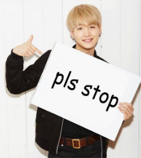

They are just all around great people with great personalities and they are obviously intellectuals because they stan pure talent.
Sweet stans are the ones that always give you the good memes. Even if they don't know you they will encourage you to keep going
They appreciate talent where talent deserves to be appreciated even if they don’t stan that group but they do good they will recognize talent. They also create projects and charity events to help and support their group
They don’t bring any group down like sabotage in order for the faves to benefit.
They ignore fan-wars because they are absolutely pointless for example exo and bts
The good ones aren’t hard to find and it is easy to block and report any toxic people
